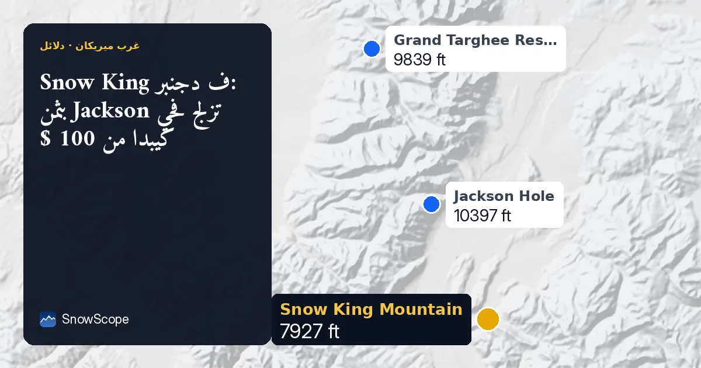
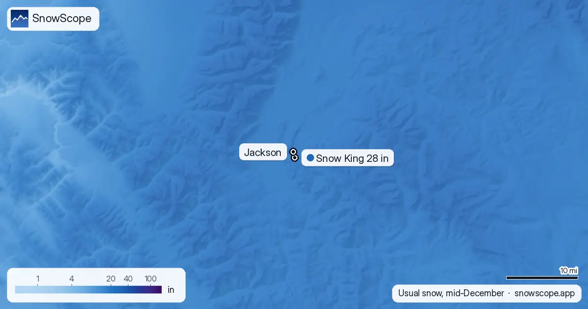

Snow King ف دجنبر: تزلج فحي Jackson بثمن كيبدا من 100 $
Snow King هي الحل ديال Jackson لعوض الركايز الغالية: جبل حاد فوسط المدينة كتقدر توصل فيها ماشي، وكرت يومي من 100 دولار وتلج دجنبر اللي كيزيد بشكل ثابت فالشهر. بحدا 15 دجنبر، الوسط عادة كيوصل ل 28 سم (71 سم)، والقمة كاينة فيها حتى أكثر.
شوف توقعات التلج مباشرة ديال Snow King Mountain فالتطبيق ديال SnowScopeالعلو ديال التلج، التنبيهات والخريطة 3D، فابور.
شنو اللي كتسكي فيه
Snow King كاينة فحافة وسط Jackson، من 6,240 فط (1,902 م) ولي 7,930 فط (2,416 م). الجبل المرسوم فيه 9 تلفريكات و حدا 11 كم (18 كم) ديال البيستات. الجبل حاد ومباشر، الكحالين كيفضلوها باش يتجنبو الطريق نحو الركايز الكبيرة.

العلو ديال التلج فدجنبر حسب الارتفاع
التلج كيوصل فالوسط (7,080 فط / 2,159 م) فمنتصف أكتوبر فالشتا العادية. بحدا 1 دجنبر، الوسط عادة كيكون فيه 19 سم (49 سم). بعد ستة عشر يوم، 15 دجنبر، العلو كيزيد نحو 28 سم (71 سم). يوم الميلاد كيجيب 34 سم (86 سم). القمة ديال الجبل (7,930 فط / 2,416 م) كتزيد أكثر: 34 سم (87 سم) فـ 15 دجنبر العادي، و 40 سم (101 سم) بحدا الميلاد.
القاع، من جهتو، كيتاخر. فـ 15 دجنبر العلو العادي فالقاع هو 21 سم (54 سم) غير، والسنين الضعيفة (واحدة من عشرة) كتقدر تكون فيه 14 سم (35 سم) غير. الحجارة كقد تبان فالقاع فأول الموسم، فركب فالوسط وفالفوق كاع مليح.

شنو هي النسبة ديال التلج فمنتصف الشهر؟
فـ 15 دجنبر، 87 % ديال الشتوات فالمعطيات ديالنا كانت عندها قد الأقل 20 سم (50 سم) فالوسط؛ 98 % كانت عندها فالقمة. حتى فدجنبر الضعيف، الوسط ما زال كيكون فيه 19 سم (49 سم) فالمتوسط. هذي النسب مليحة بزاف باش تخطط سفرية حول هاد التاريخ.
الثمن والكروت
كرت يومي لشخص بالغ (من 15 لـ 64 سنة) كتبدا من 100 دولار أونلاين. الأيام المشغولة والعطل فيها ثمن أكثر. Snow King كذلك هي محطة Indy Pass: Indy Base Pass هي 419 دولار لشخص بالغ (يومين فكل واحد من 300+ محطة مع أيام محجوزة)، و Indy+ هي 469 دولار بدون أيام محجوزة.
إذا كنت فكر فيومين فالجهة، ممكن تشري Indy+ واحدة وتختار Snow King وواحدة من الركايز الكبيرة اللي قرب، هذا ممكن يقللك من الثمن شنو لو جرا ليك تشري كروت يومي فكل واحدة.
الموازنة: Grand Targhee و Jackson Hole
Grand Targhee كاينة فجوج تاسيا ديال Teton من جهة Idaho. فـ 15 دجنبر عادة كيكون فيها 46 سم (118 سم) فالوسط—بزاف أكثر من Snow King. كل شتا فالمعطيات ديالنا كانت عندها قد الأقل 20 سم (50 سم) فـ Targhee فهاد التاريخ. كرت يومي هناك غالي من 125 لـ 180 دولار حسب التاريخ. الطريق تستاهل إذا كان العلو ديال التلج أهم من الميزانية.
Jackson Hole Mountain Resort، فالجهة فالقاع ديال الجهة، كان عندها 37 سم (93 سم) فالوسط فـ 15 دجنبر العادي. Snow King ما زال هي الدخول الأرخص لسكي جهة Jackson و الماشي الأسرع من وسط المدينة.
الاتجاه ديال المدة الطويلة
التلج فأول دجنبر فالوسط كينقص شوية بشوية مع الوقت. فأول 15 شتا ديال المعطيات (1980–81 ل 1994–95)، العلو العادي فـ 15 دجنبر كان 35 سم (88 سم) و 100 % ديال الشتوات وصلات ل 20 سم أو أكثر. فآخر 15 شتا (2011–12 ل 2025–26)، العلو العادي كان 27 سم (69 سم) و النسبة اللي وصلات ل 20 سم نقصات ل 80 %. الشتا اللي فاتت جابت غير 17 سم (44 سم) فـ 15 دجنبر، بزاف كحال من الوسط.
نصايح للي كيتزلجو
- ماشي من ساحة Jackson لقاع البيست و تجنب الركاج؛ روح المحطة ديال المدينة هي جزء من الشي.
- صوب نحو الوسط والفوق فأيام أول الموسم؛ القاع ضعيف وممكن يبان حجارات.
- ركب يوم Snow King مع يوم Grand Targhee باش تعمل نهاية سفرية من يومين رخيصة أكثر من يوم واحد فالركاز الكبير.
- الجليد ديال الصباح كيكون شائع فالبيستات اللي تتجاه الشمال فأول دجنبر؛ خطط للمسار الأول ديالك باش تقدر تصيب التلج الطري.
- إذا كانت السفرية ديالك فدجنبر محتومة، تفقد Indy Pass: يومين فالركايز المتوسطة عادة كيكون الثمن أقل من كرت يومي واحد فموسم الذروة.
على هاد الأرقام
العلو ديال التلج فالمحطات هو أكثر تلج فالجهة الفوقانية فالتاريخ المكتوب؛ هادو تقديرات لمنطقة، ماشي قياس فنقطة وحدة. التوقعات يمكن تتبدل. ديما شوف النشرة الرسمية ديال الانهيارات قبل ما تخرج من البيست.
النشرات الرسمية ديال الانهيارات: Bridger-Teton Avalanche Center
كيفاش تستاشهد بهاد المقال
للبحث، التعليم ولا الصحافة: الأرقام والرسومات تقدر تعاود تخدم بيهم بحرية تحت CC BY 4.0 مع هاد الاستشهاد.
SnowScope (2026), Snow King ف دجنبر: تزلج فحي Jackson بثمن كيبدا من 100 $, https://snowscope.app/blog/ar/2026/11/snow-king-jackson-december-budget-skiing.html, تشاف ف 2026-11-14
SnowScope (Atlas Labs). (2026, November 14). Snow King ف دجنبر: تزلج فحي Jackson بثمن كيبدا من 100 $. SnowScope snow reports. https://snowscope.app/blog/ar/2026/11/snow-king-jackson-december-budget-skiing.html
BibTeX
@misc{snowscope2026snowkingjacksondecemberb,
author = {{SnowScope (Atlas Labs)}},
title = {Snow King ف دجنبر: تزلج فحي Jackson بثمن كيبدا من 100 $},
year = {2026},
month = nov,
howpublished = {\url{https://snowscope.app/blog/ar/2026/11/snow-king-jackson-december-budget-skiing.html}},
note = {Published 2026-11-14 19:27 UTC; accessed 2026-11-14}
}· CC BY 4.0 · الطريقة، الداتا والأدوات →
Snow King Mountain: التلج والحرارة حسب العلو، هاد الشتا مقارنة مع اللي فاتت (الأدوات) →
تابع Snow King Mountain
فابور: ميساج ملي يجي التلج، والتوقعات كل صباح.